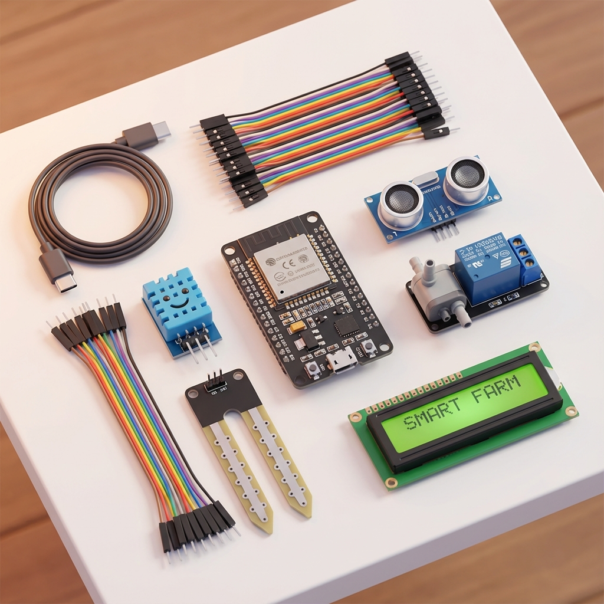
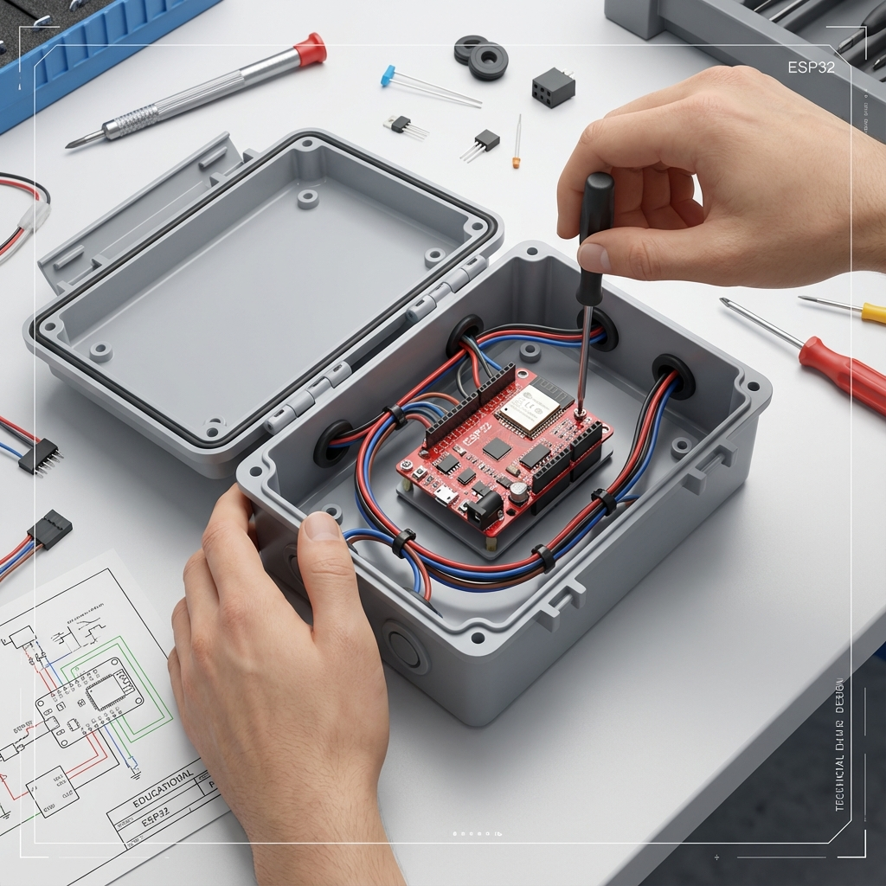

LEQs-AWD : HandySense
นวัตกรรมตรวจวัดระดับน้ำและคาร์บอนเครดิตภาคเกษตร
หน่วยบริการวิเคราะห์สิ่งแวดล้อมเพื่อท้องถิ่น (LEQs) คณะวิทยาศาสตร์และเทคโนโลยี มรภ.รำไพพรรณี พัฒนาต่อยอดชุดควบคุม HandySense ร่วมกับเซนเซอร์อัลตราโซนิกกันน้ำและท่อสังเกตการณ์ เพื่อบริหารจัดการน้ำในแปลงนาข้าวแบบ "เปียกสลับแห้ง" (Alternate Wetting and Drying: AWD) ช่วยให้เกษตรกรประหยัดน้ำ 30-50% ลดต้นทุนน้ำมันสูบน้ำ ลดการปล่อยก๊าซมีเทน 48% และสร้างคาร์บอนเครดิตภาคการเกษตรอย่างยั่งยืน
สถิติการใช้งานจริงในแปลงวิจัย
ผลการทดสอบการลดต้นทุนและยกระดับผลผลิตข้าวในเขตภาคตะวันออก
5 ขั้นตอนการปฏิบัติการจัดการน้ำเปียกสลับแห้ง (AWD)
กระบวนการเรียนรู้และลงมือทำจริงในแปลงนาของชุมชน ตั้งแต่การเตรียมอุปกรณ์ไปจนถึงการวัดคาร์บอนเครดิต
เตรียมแปลงและท่อ
ปรับระดับดินให้เรียบเสมอ ฝังท่อ PVC 4 นิ้ว (เจาะรู 5-8 mm รอบท่อช่วงล่าง) ลึก 20-25 cm โผล่เหนือน้ำ 20 cm
ติดตั้งเซนเซอร์
ติดตั้งหัวโพรบอัลตราโซนิกกันน้ำ AJ-SR04M บนฝาครอบ PVC ด้านบน ยิงคลื่นสะท้อนผิวน้ำอย่างแม่นยำระดับมิลลิเมตร
บอร์ด HandySense
บอร์ด ESP32 ประมวลผล แปลงระยะทางเป็นระดับน้ำเทียบผิวดิน และส่งข้อมูลผ่าน 4G / WiFi ขึ้นคลาวด์และแจ้งเตือน LINE
รอบเปียกสลับแห้ง
ปล่อยให้น้ำแห้งจนถึง -15 cm แล้วสั่งเปิดโซลินอยด์วาล์วเติมน้ำท่วม 5 cm สลับตามระยะการเจริญเติบโตของต้นข้าว
วัดผลและคาร์บอน
รากข้าวหยั่งลึก แตกกอดี เมล็ดเต่ง ไม่ล้มง่าย พร้อมบันทึกหลักฐานข้อมูลรอบน้ำแห้งเพื่อยื่นรับรองคาร์บอนเครดิต T-VER
กรอบแนวคิดวิจัย L-E-Q-S-AWD
การบูรณาการฟิสิกส์เกษตรดิจิทัล จุลชีววิทยาสิ่งแวดล้อม และระบบฮาร์ดแวร์เปิดเพื่อความมั่นคงทางอาหารและสิ่งแวดล้อม
การตรวจวัดระดับน้ำและแสง
การใช้คลื่นความถี่เหนือเสียง (40kHz Ultrasonic Echo) วัดระยะผิวน้ำในท่อ PVC ชดเชยอุณหภูมิอากาศ และวัดความเข้มแสงโซลาร์เซลล์
ฟิสิกส์สิ่งแวดล้อม
วิเคราะห์สมดุลความร้อน อุณหภูมิ ดิน น้ำ บรรยากาศ และสภาวะขาดดุลแรงดันไอ (Vapour Pressure Deficit: VPD) เพื่อควบคุมการคายน้ำ
คุณภาพและจุลชีววิทยา
การเติมออกซิเจนลงสู่ชั้นดินในสภาวะแห้ง ยับยั้งแบคทีเรียไม่ใช้ออกซิเจน (Methanogens) และส่งเสริมจุลินทรีย์ส่งเสริมการเจริญเติบโตของพืช (PGPR)
ระบบฮาร์ดแวร์เปิด
สถาปัตยกรรมฮาร์ดแวร์เปิดตามมาตรฐานเนคเทค (NECTEC/NSTDA) บอร์ด ESP32 พลังงานแสงอาทิตย์ และเชื่อมต่อโครงข่าย 4G/WiFi ส่งข้อมูลสู่ LINE
3 ระบบหลักที่พัฒนาขึ้นเองโดยหน่วย LEQs
การนำโครงสร้างสถาปัตยกรรม HandySense มาประยุกต์และปรับแต่งเฟิร์มแวร์-ฮาร์ดแวร์เพื่อรองรับบริบทพื้นที่ภาคตะวันออก
LEQs-AWD Smart Rice
ชุดอุปกรณ์ประกอบด้วยเซนเซอร์คลื่นเหนือเสียง AJ-SR04M ติดตั้งบนท่อ PVC สังเกตการณ์ (Observation Well) วัดระดับน้ำใต้ดินได้ลึกถึง -25 cm พร้อมแผงโซลาร์เซลล์ 20W และโมดูล 4G ส่งแจ้งเตือนระดับน้ำวิกฤต (-15 cm) และสั่งเปิดวาล์วเติมน้ำอัตโนมัติ
LEQs-Orchard Durian VPD
ชุดเอดจ์ไอโอทีสำหรับสวนทุเรียนเมืองจันทบุรีและภาคตะวันออก คำนวณค่าดุลแรงดันไอ (Vapor Pressure Deficit: VPD) ด้วยสมการ Magnus-Tetens ร่วมกับเซนเซอร์ SHT45 และโพรบวัดดิน 7-in-1 ป้องกันใบทุเรียนไหม้และการสลัดผล ควบคุมระบบพ่นหมอกและสปริงเกลอร์อัตโนมัติ
LEQs-Envi 4 Spheres
สถานีตรวจวัดฟิสิกส์สิ่งแวดล้อม 4 มณฑล (ธรณีมณฑล อุทกมณฑล บรรยากาศมณฑล และชีวมณฑล) บันทึกข้อมูลก๊าซเรือนกระจก (GHG Telemetry) รอบการระบายน้ำแห้ง และข้อมูลสภาพอากาศ เพื่อใช้เป็นหลักฐานดิจิทัล (Digital MRV) ยื่นขอรับรองคาร์บอนเครดิต T-VER กับ อบก.
ห้องปฏิบัติการเสมือนจริง : เซนเซอร์ระดับน้ำและคลื่นเสียงโซนาร์
ทดลองปรับระดับน้ำในแปลงนาข้าวเพื่อสังเกตการคำนวณคลื่นอัลตราโซนิก การทำงานของโซลินอยด์วาล์ว และการยับยั้งก๊าซมีเทน
หน้าตัดแบบจำลองท่อสังเกตการณ์ในแปลงนา (AWD Well Cross-Section)
หน้าจอแสดงผลสนาม ESP32 ATD 3.5 นิ้ว
ออกแบบอินเทอร์เฟซภาษาไทย คอนทราสต์สูง อ่านง่ายแม้อยู่กลางแสงแดดจ้าข้างแปลงนา
หน้าหลัก : ระดับน้ำและพลังงาน
กราฟประวัติระดับน้ำ 7 วัน
ควบคุมวาล์วและรีเลย์
การสื่อสารและการแจ้งเตือน
รายการจัดซื้ออุปกรณ์ ช่วงราคาจริง และแหล่งจัดซื้อในประเทศไทย
หน่วย LEQs สำรวจและประเมิน ช่วงราคาจริงในท้องตลาดไทย (ต่ำสุด - สูงสุด) ตามแหล่งจัดซื้อจริง เพื่อให้เกษตรกรและศูนย์เรียนรู้เลือกซื้อชิ้นส่วนมาตรฐานได้ตามงบประมาณอย่างโปร่งใส
ประกอบเองในหน่วย LEQs: ช่วงราคาจริง 3,030 – 5,010 บาท
ตู้ควบคุมสำเร็จรูปเชิงพาณิชย์จำหน่ายอยู่ที่ประมาณ 7,500 – 10,000 บาท (เฉลี่ย 8,500 บาท) ขณะที่การจัดซื้อชิ้นส่วนมาตรฐานตามรายการจริงของหน่วย LEQs (รวมจอแสดงผล LCD I2C หน้าตู้) มีต้นทุนฮาร์ดแวร์อยู่ระหว่าง 3,030 บาท (รุ่นประหยัด) ถึง 5,010 บาท (รุ่นเกรดอุตสาหกรรม) โดยมีค่ากลางมาตรฐานอยู่ที่ 3,630 บาท ช่วยประหยัดงบประมาณได้ 49.9% – 59.6% (ลดลง 4,470 – 4,990 บาทต่อชุด)
ข้อชี้แจงสำคัญเกี่ยวกับขอบเขตการประเมินราคาอุปกรณ์ Hardware Only
การประเมินราคาข้างต้นเป็น "ต้นทุนวัสดุและอุปกรณ์ฮาร์ดแวร์สนามเท่านั้น" (Hardware & Field Components) เพื่อให้เห็นต้นทุนวัสดุจริงในการลงมือประกอบอุปกรณ์ โดย ไม่ได้รวมค่าใช้จ่ายด้านคลาวด์เซิร์ฟเวอร์ แอปพลิเคชัน และระบบฐานข้อมูล ดังนี้:
เซิร์ฟเวอร์รับส่งข้อมูลโทรมาตร, MQTT Broker, VPS Cloud Hosting สำหรับเชื่อมโยงข้อมูลข้ามจังหวัด
ระบบจัดเก็บ Time-Series (MySQL, InfluxDB, PostgreSQL) สำหรับจัดเก็บสถิติและคำนวณคาร์บอนเครดิตระยะยาว
ค่าออกแบบ UI/UX, เขียนโค้ดแอปสมาร์ทโฟน iOS/Android, ค่าธรรมเนียม App Store / Play Store และการบำรุงรักษา
ค่าแพ็กเกจซิมการ์ด IoT รายเดือน/รายปี สำหรับพื้นที่แปลงนาที่ไม่มีสัญญาณ WiFi ฟาร์ม
เกษตรกรเปิดสมาร์ทโฟนเชื่อมต่อตรงกับตัวเครื่อง HandySense ผ่าน Bluetooth LE (BLE) หรือ WiFi Direct ในระยะ 10 - 30 เมตร ดูระดับน้ำและสั่งการผ่าน Web App ออฟไลน์ได้ทันที โดยไม่มีค่าเซิร์ฟเวอร์ ฐานข้อมูล หรือค่าบริการรายเดือนแม้แต่บาทเดียว
เกษตรกรและชุมชนในเครือข่ายแปลงทดสอบ มรภ.รำไพพรรณี สามารถส่งข้อมูลเข้าสู่ระบบเซิร์ฟเวอร์และแดชบอร์ดส่วนกลางของ ศูนย์เรียนรู้ LEQs Smart Farm เพื่อติดตามผลและรับใบรายงานคาร์บอนเครดิตร่วมกันได้โดยไม่ต้องจัดตั้งเซิร์ฟเวอร์เอง
เซนเซอร์อัลตราโซนิกกันน้ำ AJ-SR04M
ระยะ 20-450 cm, กันน้ำ IP67, หัวโพรบทองเหลืองพร้อมสาย 2.5m
ท่อ PVC 4 นิ้ว ชั้น 8.5 ยาว 1.0 เมตร
เจาะรูระบาย 5-8 mm รอบท่อช่วงล่าง 40 cm สำหรับวัดระดับน้ำใต้ดิน
ฝาครอบ PVC 4 นิ้ว + ตาข่ายไนลอน
ฝาบนเจาะรูยึดโพรบ ฝาล่างปิดปลายท่อ มุ้งไนลอนกรองโคลนตะกอน
บอร์ดไมโครคอนโทรลเลอร์ ESP32-S3
Dual Core 240MHz, Flash 4-16MB, WiFi+Bluetooth, Deep Sleep
จอแสดงผล LCD 20x4 I2C (หรือ จอสี 3.5" TFT)
แสดงค่าน้ำ แบตเตอรี่ และสัญญาณ 4G หน้าตู้ทันที พร้อมพักจออัตโนมัติ
โมดูลสื่อสาร 4G LTE A7670E
รองรับ 4G ทุกค่ายในไทย พร้อมเสาอากาศ SMA ส่งข้อมูลไร้ WiFi
โมดูลรีเลย์ 1-Ch 12V Optocoupler
แยกสัญญาณด้วยแสง ทนกระแส 10A ควบคุมโซลินอยด์วาล์วน้ำ
แผ่นวงจรพิมพ์ PCB + Screw Terminal
เทอร์มินัลบล็อก 5.08mm จัดเก็บสายสัญญาณแน่นหนาทนสั่นสะเทือน
แผงโซลาร์เซลล์ Mono 10W-20W 18V
กรอบอลูมิเนียมกันน้ำ ผลิตไฟได้ดีแม้แสงน้อย เลี้ยงระบบได้ 24 ชม.
Solar Charge Controller 12V 10A
จอแสดงแรงดัน ป้องกันไฟย้อน ตัดการจ่ายไฟเมื่อแบตเตอรี่ต่ำ
แบตเตอรี่ LiFePO4 12V 6Ah + BMS
รอบชาร์จ >2,000 ครั้ง ทนแดดจัด ไม่ระเบิด สำรองไฟได้ 3-5 วัน
โมดูลแปลงไฟ Step-Down 12V to 5V 3A
LM2596 จ่ายแรงดันคงที่ 5.0V นิ่งสนิท ป้องกันไฟกระชากบอร์ด
กล่องกันน้ำ ABS/PC ฝาใส IP65
ฝาใสเห็นจอ LCD หน้าตู้ทันที ขนาด 150x200x100mm พร้อมเคเบิ้ลแกลนด์
โซลินอยด์วาล์ว 1 นิ้ว 12VDC (NC)
คุมเปิด-ปิดน้ำเข้าแปลงนาอัตโนมัติ ทนแรงดันน้ำ 0.5-8 บาร์
เสาเหล็กกัลวาไนซ์ 1 นิ้ว + แคลมป์
เสากันสนิมยาว 1.5m ปักคันนา แข็งแรงทนลมพายุและเครื่องจักร

แผนผังชิ้นส่วนอุปกรณ์ HandySense-AWD ทั้ง 15 รายการ
ดูการแยกส่วนประกอบ 4 หมวดหลัก: เซนเซอร์ในท่อ PVC, กล่องควบคุม ESP32 และจอ LCD, โซลาร์เซลล์ และระบบวาล์วสนาม

ไดอะแกรมการติดตั้งจริงในแปลงนาเปียกสลับแห้ง (AWD)
ดูการฝังท่อสังเกตการณ์ลึกลงดิน 20-25 cm, การติดตั้งตู้ควบคุมข้างคันนา และตำแหน่งต่อวาล์วไฟฟ้าปล่อยน้ำ
เครื่องคำนวณผลตอบแทนและการลดก๊าซเรือนกระจก (ROI & Carbon)
จำลองการประหยัดค่าน้ำมันสูบน้ำ การลดก๊าซมีเทน และโอกาสสร้างรายได้จากคาร์บอนเครดิตภาคการเกษตร
คณะผู้วิจัยและทีมงานหน่วย LEQs
โครงการวิจัย "นวัตกรรมตรวจวัดระดับน้ำและคาร์บอนเครดิตภาคเกษตร" โดยคณาจารย์ผู้ทรงคุณวุฒิและนักวิจัยสหวิทยาการ คณะวิทยาศาสตร์และเทคโนโลยี มหาวิทยาลัยราชภัฏรำไพพรรณี
คณะผู้บริหารและหัวหน้าโครงการ (Project Leadership & Principal Investigators)
ผศ.วิชลัดดา อุ่นสะอาด
Asst. Prof. Witchaladda Ounsa-ard
บริหารและกำกับทิศทางโครงการวิจัย "นวัตกรรมตรวจวัดระดับน้ำและคาร์บอนเครดิตภาคเกษตร" บูรณาการวิทยาศาสตร์สิ่งแวดล้อมเพื่อสร้างโมเดลแปลงนาต้นแบบ การประเมินมาตรฐานคาร์บอนเครดิตภาคเกษตรกรรมยั่งยืน และขับเคลื่อนความร่วมมือระหว่างมหาวิทยาลัย ชุมชนชาวนา และหน่วยงานรับรองระดับชาติ
ผศ.ดร.สุนิษา สุวรรณเจริญ
Asst. Prof. Dr. Sunisa Suwancharoen
ร่วมกำกับทิศทางและบริหารงานวิจัย การวิเคราะห์ผลกระทบสิ่งแวดล้อมและเคมีในแปลงนาข้าว การจัดเก็บข้อมูลการปลดปล่อยก๊าซเรือนกระจกเพื่อรายงานความก้าวหน้าตามระเบียบวิธีวิจัย การประเมินผลสัมฤทธิ์ของการจัดการน้ำเปียกสลับแห้ง และการจัดทำคู่มือวิชาการเผยแพร่สู่เกษตรกร
ผู้เชี่ยวชาญเทคโนโลยี AIoT และสิ่งแวดล้อม (Lead Tech & Environmental Specialists)
ผศ.ดร.ชีวะ ทัศนา
Asst. Prof. Dr. Chewa Thassana
ฟิสิกส์เกษตรดิจิทัล, ออกแบบสถาปัตยกรรม HandySense AWD, เซนเซอร์อัลตราโซนิกคลื่นเสียงตรวจจับผิวน้ำ, แผงโซลาร์และระบบจัดการแบตเตอรี่ LiFePO4, เฟิร์มแวร์ ESP32-S3 MicroPython/C++, สถาปัตยกรรม IoT MQTT Telemetry และการคำนวณ Edge AI
ผศ.อรรถกร คำฉัตร
Asst. Prof. Atthakorn Khamchat
วิทยาศาสตร์สิ่งแวดล้อม, การเปลี่ยนแปลงสภาพภูมิอากาศ, การตรวจวัดอัตราการปลดปล่อยก๊าซมีเทน (CH₄) และก๊าซเรือนกระจกในนาข้าว, การประเมินสัมประสิทธิ์การกักเก็บคาร์บอน (Emission Factors), นิเวศวิทยานาข้าว และการประเมินผลกระทบสิ่งแวดล้อม
คณะผู้วิจัยและทีมผู้เชี่ยวชาญสหวิทยาการ 4 มณฑล (Interdisciplinary 4-Spheres Faculty Team)
ผศ.ดร.จิรภัทร จันทมาลี
Asst. Prof. Dr. Jirapat Janthamalee
รศ.ดร.นิภัทร เปี่ยมอรุณ
Assoc. Prof. Dr. Niphat Piam-arun
ผศ.ดร.นันทพร มูลรังษี
Asst. Prof. Dr. Nanthaporn Moonrangsee
ผศ.ดร.ณมนรัก คำฉัตร
Asst. Prof. Dr. Namonrak Khamchat
ข้อควรรู้และคำถามที่พบบ่อย (AWD FAQ)
หลักการทางวิชาการและข้อแนะนำเชิงปฏิบัติในการนำระบบ HandySense AWD ไปปรับใช้ในแปลงนาจริง
1 การทำนาเปียกสลับแห้ง (AWD) ทำให้ผลผลิตข้าวลดลงหรือไม่?
ไม่ลดลง และมักได้ผลผลิตเพิ่มขึ้น 10-15% เนื่องจากการปล่อยให้น้ำแห้งจะทำให้อากาศและออกซิเจนซึมลงสู่ชั้นดิน กระตุ้นให้รากข้าวหยั่งลึกลงไปหาความชื้น ลำต้นแข็งแรง ไม่ล้มง่ายเมื่อมีลมพายุ ลดการระบาดของโรคแมลงและเพลี้ยกระโดดสีน้ำตาล
2 ทำไมต้องกำหนดเกณฑ์น้ำแห้งไว้ที่ -15 cm จากผิวดิน?
ระดับความลึก -15 cm คือเกณฑ์ความปลอดภัยทางสรีรวิทยาของต้นข้าว (Safe Alternate Wetting and Drying) ซึ่งรากฝอยยังสามารถดูดซับความชื้นผ่านแรงดึงของเม็ดดิน (Capillary Action) ได้เต็มที่โดยไม่เกิดสภาวะเครียดจากการขาดน้ำ
3 ช่วงการเจริญเติบโตใดของข้าวที่ "ห้ามปล่อยให้น้ำแห้ง"?
ช่วงตั้งท้องจนถึงออกรวงและผสมเกสร (ประมาณวันที่ 60-85 หลังหว่าน/ปักดำ) เป็นช่วงวิกฤตที่ต้นข้าวต้องการน้ำอย่างต่อเนื่อง ต้องรักษาระดับน้ำขังไว้ที่ประมาณ +5 ถึง +10 cm เพื่อให้รวงข้าวผสมเกสรสมบูรณ์ เมล็ดเต่ง ไม่ลีบ
4 เซนเซอร์อัลตราโซนิกกันน้ำ AJ-SR04M ดีกว่าก้านวัดโลหะอย่างไร?
เซนเซอร์อัลตราโซนิก ไม่มีชิ้นส่วนสัมผัสน้ำหรือโคลนโดยตรง (Non-contact sensing) จึงไม่เกิดปัญหาคราบตะกรัน สนิม หรือการสึกกร่อนจากปุ๋ยเคมีและแร่ธาตุในดิน มีอายุการใช้งานยาวนานกว่า 3-5 ปี โดยไม่ต้องทำความสะอาดบ่อยครั้ง
5 ระบบโซลาร์เซลล์ 20W และแบต LiFePO4 เพียงพอในฤดูฝนหรือไม่?
บอร์ด HandySense ESP32 ของ LEQs ถูกโปรแกรมให้ทำงานในโหมด Deep Sleep (ตื่นขึ้นมาวัดค่าและส่งข้อมูลทุก 15-30 นาที แล้วหลับ) กินกระแสเฉลี่ยต่ำกว่า 15 mA แบตเตอรี่ LiFePO4 6Ah จึงสามารถจ่ายไฟเลี้ยงระบบได้ต่อเนื่อง 4-5 วันแม้ไม่มีแสงแดดส่องเลย
6 ข้อมูลที่บันทึกไว้สามารถนำไปยื่นขายคาร์บอนเครดิต (T-VER) ได้อย่างไร?
ระบบจะบันทึก Log ระดับน้ำ วันที่ และพิกัด GPS อัตโนมัติลงในฐานข้อมูล SQLite และส่งขึ้น Google Sheets ซึ่งใช้เป็น หลักฐานดิจิทัลที่ตรวจสอบได้ (Digital MRV) ตามมาตรฐานระเบียบวิธีขององค์การบริหารจัดการก๊าซเรือนกระจก (อบก.)
เอกสารวิชาการ ผังวงจร และคู่มือการประกอบ
ดาวน์โหลดเอกสาร คู่มือการสร้าง ผังวงจรไฟฟ้า และซอร์สโค้ดเฟิร์มแวร์เพื่อนำไปขยายผลสู่ชุมชน
คู่มือประกอบและติดตั้ง
ขั้นตอนการเจาะท่อ PVC การติดตั้งหัวโพรบ การเดินสายไฟในกล่องตู้ และการทดสอบระบบก่อนลงแปลง
ผังวงจรไฟฟ้า (Schematic)
ผังการต่อสายระหว่าง ESP32, AJ-SR04M, รีเลย์, แผงโซลาร์เซลล์, และแบตเตอรี่ LiFePO4 12V
ใบเสนอราคาและรายการพัสดุ
ตารางสรุปรายการอุปกรณ์ รหัสสินค้า ร้านค้าผู้จำหน่าย และราคาจริงสำหรับจัดทำเอกสารเบิกจ่ายราชการ
ซอร์สโค้ดเฟิร์มแวร์
โค้ดควบคุม ESP32 รองรับการเชื่อมต่อ HandySense Open Source Platform และ LINE Notify API
ร่วมพัฒนาและถ่ายทอดเทคโนโลยีสู่แปลงนาชุมชน
หน่วย LEQs คณะวิทยาศาสตร์และเทคโนโลยี มหาวิทยาลัยราชภัฏรำไพพรรณี ยินดีให้คำปรึกษาแก่กลุ่มวิสาหกิจชุมชน เกษตรกรแปลงใหญ่ และสถาบันการศึกษา ในการฝึกอบรมประกอบชุด HandySense AWD และการประเมินคาร์บอนเครดิต